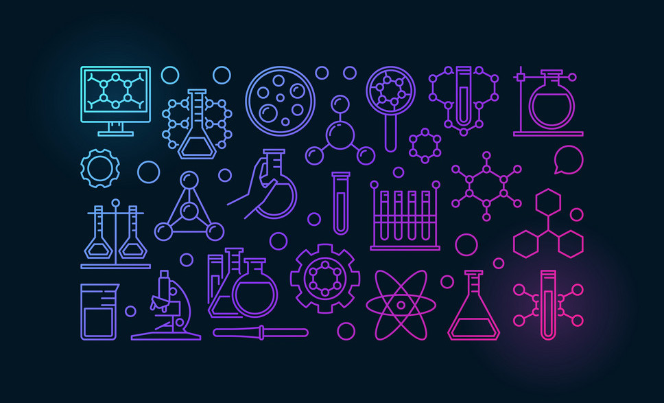

Education
Bachelor of Chemistry, University of Al-Baha, 2015
Expeirences
- Leader and trainer in scientific Nebras Club for Robotics and Sciences for the year of 2015/2016
- Lecture in chemistry Dept.concerning Nanowires, Faculty of science, 2015.
Achievements
- Certificate of experience in management of Nebras Science Club for Robotics and Sciences for the year of 2015/2016
- Winner of the Sheikh Mohammed bin Suhaim Award for Scientific excellence in 2015
- Certificate of excellence to participate in the competition of the Fifth Scientific Conference in Riyadh in 2015
- Certificate of excellence for an innovative at Innovation Exhibition 2013.
Interst Events
Events at King Abduallah university of science and technology( KAUST),
Visit
Follow them on Twitter, FOLLOW
Documents & Lessons
- Nanowires Studies
- Crash-Course Channel